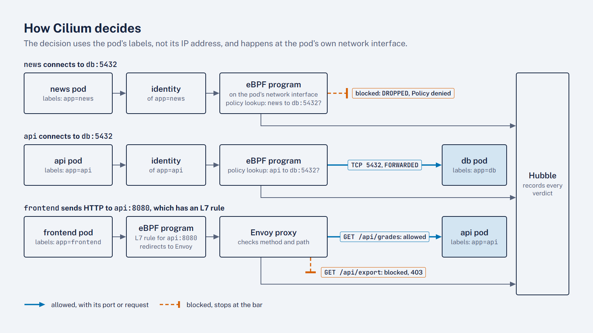
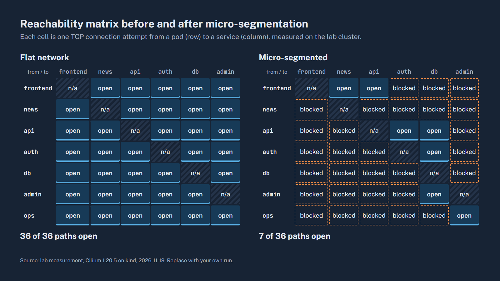
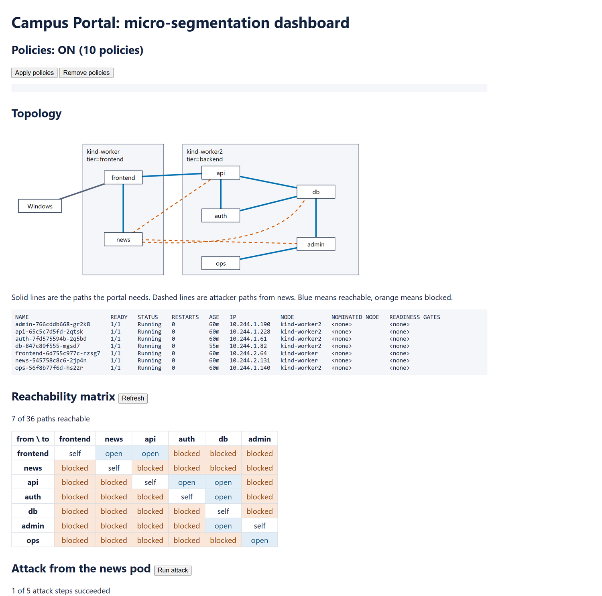

Chapter 10. Apply micro-segmentation
You type the default-deny baseline by hand, apply it on its own and watch it close every path, including the ones the portal needs. Then you add one policy per workload, which reopens exactly the 8 connections from your flow table. You run the same checks and the same attack as in chapter 8, and finish with a toggle test that flips the results back and forth. At the end the portal still passes PORTAL: 6/6 OK, the matrix shows 7 of 36 paths open, the attack stops after step 1, and /api/export answers 403 Forbidden. Plan on two to three hours.
Keep the dashboard running in its own Ubuntu window, as in chapter 8, and type every other command in your first Ubuntu window unless the text right above the block says to use Windows PowerShell. Keep a sheet of paper or a text file next to you, and write down each number this chapter gives you as soon as you get it. The checkpoint at the end asks for them.
Start flat, with Omar at 58
The before-and-after comparison only holds if you start from the same state chapter 8 started from: no policies, and Omar's grade back at 58.
kubectl -n campus get ciliumnetworkpolicies
kubectl -n campus exec deploy/db -- psql -U postgres -d campus -c "SELECT * FROM grades WHERE id = 3"The first command lists the Cilium policies in campus. The second reads Omar's Network Security grade from inside the db pod, as in chapter 8.
You should see no policies and a grade of 58.
The first line must read No resources found in campus namespace. and the grade column must show 58.
If you see this instead
The grade reads 95. You skipped the reset at the end of chapter 8. Run the four commands from that chapter's "Reset Omar's grade" step, then this check again.
The first command lists policies. Remove them with kubectl delete -f ~/microseg/k8s/policies/, which deletes every policy defined in that folder, and run this check again.
Type 1-baseline.yaml and test it with a dry run
The baseline file holds the three policies that apply to every pod in campus: deny everything, allow name lookups, allow health checks. You type it by hand, so that you read every line as you go.
Create the file in VS Code, in the project window you opened with code . in chapter 2. In the Explorer pane on the left, right-click the k8s folder, choose "New File...", type policies/1-baseline.yaml as the name and press Enter. Typing a name with a slash in it makes VS Code create the policies folder and the file inside it in one go, and the empty file opens in a new tab.
Type the file below. Copy the indentation exactly, using spaces, never the Tab key. YAML, the format Kubernetes files are written in, decides what belongs to what by how far each line is indented, so one wrong space changes the meaning. VS Code indents YAML for you as you type. When you press Enter after a line that ends in :, it moves the cursor in, and on other lines it keeps the indentation of the line above. So before you type each line, look at the Col number in the status bar at the bottom right. Add or delete spaces until it matches the listing, where Col 1 means no spaces at all, Col 3 means two spaces, and so on. The label keys under matchLabels in the second policy are in double quotes because they contain a colon. Type those quotes too. The lines that start with # are comments, and Kubernetes ignores them. Type them too if you can spare the time, since they explain what each line does.
# 1) default-deny: selects every pod in campus. The empty ingress rule and the empty
# egress rule switch both directions to "deny unless another policy allows it".
apiVersion: cilium.io/v2
kind: CiliumNetworkPolicy
metadata:
name: default-deny
namespace: campus
spec:
endpointSelector: {}
ingress:
- {}
egress:
- {}
---
# 2) allow-dns: every pod may ask kube-dns (in kube-system) on port 53, for any name.
apiVersion: cilium.io/v2
kind: CiliumNetworkPolicy
metadata:
name: allow-dns
namespace: campus
spec:
endpointSelector: {}
egress:
- toEndpoints:
- matchLabels:
"k8s:io.kubernetes.pod.namespace": kube-system
"k8s:k8s-app": kube-dns
toPorts:
- ports:
- port: "53"
protocol: ANY
rules:
dns:
- matchPattern: "*"
---
# 3) allow-kubelet-probes: readiness probes come from the node itself (entity "host").
# Cilium already allows this by default. Writing it down makes the rule visible
# and keeps probes working if that default is ever changed.
apiVersion: cilium.io/v2
kind: CiliumNetworkPolicy
metadata:
name: allow-kubelet-probes
namespace: campus
spec:
endpointSelector: {}
ingress:
- fromEntities:
- hostWhat each part does:
(1) The --- lines split one file into three separate objects. YAML allows several documents in one file, and kubectl applies them in order.
(2) apiVersion: cilium.io/v2 and kind: CiliumNetworkPolicy say what sort of object this is. Kubernetes didn't know this kind when it was first installed. Cilium taught it in chapter 4. It registered the new type with a CustomResourceDefinition, CRD for short, which is the word kubectl uses in its error messages. The objects of that type, such as your policies, are called custom resources, and the Cilium agent on each node watches for them.
(3) name: is how you refer to the policy later, and namespace: campus limits it to pods in campus. Leave the namespace line out and the policy lands in the default namespace, where it selects none of your pods.
(4) endpointSelector: {} picks which pods the policy is about. An endpoint is Cilium's word for a pod it manages. A selector with nothing inside it has no conditions, so it picks every pod in the namespace.
(5) ingress: followed by - {}, and egress: followed by - {}, are lists holding one empty rule each. In Cilium, as soon as a policy with an ingress section selects a pod, every incoming connection that no rule allows is dropped, and an egress section does the same for outgoing connections. The empty rule allows nothing. The result is default deny in both directions for every pod. Be careful with this shape, because the identical - {} in a standard Kubernetes NetworkPolicy means the opposite, allow everything. And in Cilium an empty list, ingress: [], wouldn't switch on default deny at all. Type it as a dash, a space, an opening brace and a closing brace.
(6) allow-dns gives every pod one exit: to the kube-dns pods, which turn service names such as db into addresses. The two labels under matchLabels pick those pods. k8s:io.kubernetes.pod.namespace: kube-system reaches into the kube-system namespace, where kube-dns runs, and k8s:k8s-app: kube-dns is the label the kube-dns pods carry. The k8s: prefix tells Cilium these are Kubernetes labels. port: "53" is the DNS port, written in quotes because Cilium expects the port as text. protocol: ANY covers both UDP and TCP, since DNS uses both.
(7) The rules: block with dns: and matchPattern: "*" sends every lookup through Cilium's DNS proxy. The * lets any name through, but every lookup gets recorded, so in chapter 11 you'll see the attacker's lookups in Hubble even though all their connections failed.
(8) allow-kubelet-probes lets health checks in. fromEntities: - host allows connections from the host entity. An entity is a group that Cilium names itself, with no labels involved. host means the node the pod runs on, where the kubelet sends readiness probes from, and world means everything outside the cluster. Cilium allows the host by default anyway. Writing it down makes the rule visible, and keeps the probes working if that default ever changes.
Save the file with Ctrl+S. Now let the API server check it without changing anything.
cd ~/microseg
kubectl apply --dry-run=server -f k8s/policies/1-baseline.yamlcd ~/microseg moves into the project folder, because the file path in the next line starts from there. --dry-run=server sends the objects to the Kubernetes API server, which checks them as if it were going to store them, then throws them away. Typing mistakes show up here, while nothing in the cluster has changed yet.
You should see one line per policy.
ciliumnetworkpolicy.cilium.io/default-deny created (server dry run)
ciliumnetworkpolicy.cilium.io/allow-dns created (server dry run)
ciliumnetworkpolicy.cilium.io/allow-kubelet-probes created (server dry run)All three lines must end in created (server dry run).
If you see this instead
error: the path "k8s/policies/1-baseline.yaml" does not existThe file isn't where the command looks for it. Run ls ~/microseg/k8s/policies, which must list 1-baseline.yaml. If the file sits somewhere else in the project, such as directly in k8s, drag it onto the policies folder in VS Code's Explorer pane. If ls says No such file or directory although VS Code shows the file, check the VS Code window. If the title bar doesn't show [WSL: Ubuntu-24.04] and the bottom-left corner has no WSL patch, you're editing files on the Windows side. Close that window, run cd ~/microseg && code . in Ubuntu, and create the file again in the window that opens.
error: error parsing k8s/policies/1-baseline.yaml: error converting YAML to JSON: yaml: line 9: found character that cannot start any tokenA Tab character is hiding in your indentation, or a line starts with a character YAML reserves, such as a backtick. The line number points at it, and yours may differ. Render Whitespace is already on from chapter 2, so tabs show as small arrows and spaces as dots. If you see neither, set Editor: Render Whitespace to all in Settings, as in chapter 2. Replace every arrow with spaces and run the dry run again.
error: error parsing k8s/policies/1-baseline.yaml: error converting YAML to JSON: yaml: line 12: mapping values are not allowed in this contextThe same error can end in did not find expected key instead, and the line number may differ. A line is indented more or less than it should be compared with its neighbours, often because VS Code had already moved the cursor in and you typed the spaces on top. Put the cursor at the start of the line it names and of the two or three lines above it, compare each Col number with the listing, and fix the spaces.
error: resource mapping not found for name: "default-deny" namespace: "campus" from "k8s/policies/1-baseline.yaml": no matches for kind "CiliumNetworkpolicy" in version "cilium.io/v2"
ensure CRDs are installed firstThe kind line has a typo, here a lower-case p. Kubernetes matches kinds letter for letter. Write CiliumNetworkPolicy with capital C, N and P.
An error that ends in strict decoding error: unknown field "spec.endpointSelecter" means a field name is misspelled, or a line is indented under the wrong parent. The quoted path names the field, for example spec.endpointSelecter for a misspelled endpointSelector. Fix that line and run the dry run again.
Apply the baseline alone: 0 of 36
Before you allow anything, prove that default deny is really on.
cd ~/microseg
kubectl apply -f k8s/policies/1-baseline.yamlThis time kubectl apply stores the three policies. Within a few seconds, the Cilium agent on every node turns them into entries that the eBPF programs on each pod's network interface check for every new connection.
You should see three created lines.
ciliumnetworkpolicy.cilium.io/default-deny created
ciliumnetworkpolicy.cilium.io/allow-dns created
ciliumnetworkpolicy.cilium.io/allow-kubelet-probes createdEach line must end in created, with no (server dry run) this time. If you applied this file before, the lines end in unchanged or configured instead, and that's fine.
Give Cilium a few seconds to load the new rules, then ask the dashboard for the matrix.
sleep 8
curl -s localhost:5050/api/matrix | jq -c '{open, total}'sleep 8 is the settle time, the few seconds Cilium needs after a change before every node enforces it. The second line calls the matrix route behind the dashboard's "Refresh" button. jq -c '{open, total}' keeps only the two counts and prints them on one line.
You should see no open paths.
{"open":0,"total":36}It must read {"open":0,"total":36}. The dashboard page doesn't notice changes you make from the terminal by itself. Reload it in the browser with F5, and the heading reads "Policies: ON (3 policies)". Reloading runs the matrix again too, and every cell turns orange, marked blocked.
Now check the portal itself.
bash ~/microseg/check-portal.shYou should see every check fail.
FAIL portal page loads (expected '200', got '000')
FAIL news list has 3 items (expected '3', got '')
FAIL sara can log in (expected '32', got '0')
FAIL sara sees her profile (expected 'Sara Ahmed', got '')
FAIL sara sees her 2 grades (expected '2', got '')
command terminated with exit code 28
FAIL ops can open the admin panel (expected '4', got '')
PORTAL: 0/6 OKThe last line must read PORTAL: 0/6 OK. The script takes about half a minute, because each check waits up to 5 seconds for an answer that never comes. The line command terminated with exit code 28 comes from the admin panel check: curl inside the ops pod gave up with its timeout code, 28, and kubectl passed that on. This broken portal is the result you want here. It proves that nothing gets through unless a rule allows it, including your own students.
If you see this instead
The matrix still reads {"open":36,"total":36}. The policies aren't in campus. Run kubectl -n campus get ciliumnetworkpolicies. If it prints No resources found in campus namespace., the namespace: campus line is missing or misspelled. Remove what you applied with kubectl delete -f k8s/policies/1-baseline.yaml, fix the file and apply it again.
The matrix command prints nothing. The dashboard isn't running. Start it in its own Ubuntu window as in chapter 8 and run the matrix command again.
The portal check ends PORTAL: 6/6 OK, and kubectl -n campus get ciliumnetworkpolicies lists 10 policies instead of 3. You applied the whole folder, or clicked "Apply policies", and a 2-allow.yaml from an earlier attempt came along. Remove its policies with kubectl delete -f k8s/policies/2-allow.yaml, wait a few seconds and run the matrix and portal checks again.
Write 2-allow.yaml: one policy per workload
The baseline closed everything. The second file reopens exactly the 8 connections in your flow table, with one policy for each of the seven workloads, following the plan table in chapter 9's section "Two permissions per connection: exit visa and entry visa".
Create it next to the baseline. In VS Code's Explorer pane, right-click the policies folder, choose "New File..." and name it 2-allow.yaml.
Here is the whole file. Build it in three parts. Paste everything from the first line down to and including the --- line that follows the news policy. Then type the api policy yourself, from apiVersion: cilium.io/v2 to the last protocol: TCP before the next ---. Last, paste everything from that --- line to the end. While you type the api policy, check the Col number before each line, as you did for the baseline, because VS Code indents for you here too.
# One policy per workload. Every allowed connection needs BOTH
# egress in the caller's policy AND ingress in the callee's policy.
# Ports are container ports (equal to the Service ports in app.yaml).
apiVersion: cilium.io/v2
kind: CiliumNetworkPolicy
metadata:
name: frontend
namespace: campus
spec:
endpointSelector:
matchLabels:
app: frontend
ingress:
- fromEntities:
- world # Windows / WSL through NodePort 30080
toPorts:
- ports:
- port: "80"
protocol: TCP
egress:
- toEndpoints:
- matchLabels:
app: api
toPorts:
- ports:
- port: "8080"
protocol: TCP
- toEndpoints:
- matchLabels:
app: news
toPorts:
- ports:
- port: "5000"
protocol: TCP
---
apiVersion: cilium.io/v2
kind: CiliumNetworkPolicy
metadata:
name: news
namespace: campus
spec:
endpointSelector:
matchLabels:
app: news
ingress:
- fromEndpoints:
- matchLabels:
app: frontend
toPorts:
- ports:
- port: "5000"
protocol: TCP
# No egress section: news keeps default-deny egress (only DNS, from allow-dns).
---
apiVersion: cilium.io/v2
kind: CiliumNetworkPolicy
metadata:
name: api
namespace: campus
spec:
endpointSelector:
matchLabels:
app: api
ingress:
- fromEndpoints:
- matchLabels:
app: frontend
toPorts:
- ports:
- port: "8080"
protocol: TCP
rules:
http: # L7: only these three calls, everything else gets 403
- method: "GET"
path: "/api/grades"
- method: "GET"
path: "/api/profile"
- method: "POST"
path: "/api/login"
egress:
- toEndpoints:
- matchLabels:
app: auth
toPorts:
- ports:
- port: "5001"
protocol: TCP
- toEndpoints:
- matchLabels:
app: db
toPorts:
- ports:
- port: "5432"
protocol: TCP
---
apiVersion: cilium.io/v2
kind: CiliumNetworkPolicy
metadata:
name: auth
namespace: campus
spec:
endpointSelector:
matchLabels:
app: auth
ingress:
- fromEndpoints:
- matchLabels:
app: api
toPorts:
- ports:
- port: "5001"
protocol: TCP
egress:
- toEndpoints:
- matchLabels:
app: db
toPorts:
- ports:
- port: "5432"
protocol: TCP
---
apiVersion: cilium.io/v2
kind: CiliumNetworkPolicy
metadata:
name: db
namespace: campus
spec:
endpointSelector:
matchLabels:
app: db
ingress:
- fromEndpoints:
- matchLabels:
app: api
- matchLabels:
app: auth
- matchLabels:
app: admin
toPorts:
- ports:
- port: "5432"
protocol: TCP
---
apiVersion: cilium.io/v2
kind: CiliumNetworkPolicy
metadata:
name: admin
namespace: campus
spec:
endpointSelector:
matchLabels:
app: admin
ingress:
- fromEndpoints:
- matchLabels:
app: ops
toPorts:
- ports:
- port: "5002"
protocol: TCP
egress:
- toEndpoints:
- matchLabels:
app: db
toPorts:
- ports:
- port: "5432"
protocol: TCP
---
apiVersion: cilium.io/v2
kind: CiliumNetworkPolicy
metadata:
name: ops
namespace: campus
spec:
endpointSelector:
matchLabels:
app: ops
egress:
- toEndpoints:
- matchLabels:
app: admin
toPorts:
- ports:
- port: "5002"
protocol: TCPEvery policy in this file has the same parts. endpointSelector with matchLabels picks the pods the policy is about, by their app label. ingress lists who may connect to those pods, and egress lists what they may connect to. Inside a rule, fromEndpoints or toEndpoints names the other side by its labels, fromEntities names it by entity, and toPorts names the port. Each rule is one visa from chapter 9. The comment at the top of the file says so: every allowed connection needs egress in the caller's policy and ingress in the callee's.
Go through the api policy, the one you typed, line by line.
(1) endpointSelector with app: api makes this policy about the api pods. Cilium resolves that label to a security identity, so the policy follows api to whatever IP address its pod gets.
(2) Under ingress, fromEndpoints with app: frontend and port: "8080" is api's entry visa: only pods labelled app: frontend may connect, and only on port 8080. The ports in these policies are container ports, the ports the programs listen on inside the pods. Cilium checks a connection after the Service address has been turned into a pod address, so it sees the container port. In this lab they're equal to the Service ports anyway.
(3) The rules: block inside that port is the L7 part. It's the excerpt below, copied from the file.
rules:
http: # L7: only these three calls, everything else gets 403
- method: "GET"
path: "/api/grades"
- method: "GET"
path: "/api/profile"
- method: "POST"
path: "/api/login"Because a rules: http: block exists, Cilium sends every connection from frontend to api through Envoy, its HTTP proxy. Envoy reads each request and lets it through only if its method and path match one of the three pairs. Cilium compares the whole path, so /api/grades doesn't let /api/grades2 or /api/export through. Any other request gets an immediate 403 Forbidden answer from Envoy, and api never sees it. Spelling counts here. POST must be in capitals, and the paths must match the ones in the nginx log from chapter 9 character for character.
(4) Under egress, two toEndpoints rules are api's exit visas, to auth on 5001 and to db on 5432.
Now look at what the other policies leave out, because the gaps are part of the design. The news policy has no egress section, so news keeps the baseline's default deny for egress and can only reach DNS. The db policy has no egress either. The ops policy has no ingress section, so nothing may connect to ops. The frontend policy is the only one that uses fromEntities: world, which lets visitors in from outside the cluster on port 80.
Save the file with Ctrl+S.


Figure 6 follows one connection through Cilium's checks, egress at the caller's network interface and ingress at the callee's. Frontend to api is the only connection that detours through Envoy.
Before you apply the allow file, check that both files sit where the commands in this chapter expect them.
ls ~/microseg/k8s/policiesls lists the files in a folder.
You should see your two policy files.
The line must read 1-baseline.yaml 2-allow.yaml, and nothing else.
If you see this instead
2-allow.yaml is missing from the list. VS Code created it in another folder, usually k8s or the project's top level. Drag it onto the policies folder in the Explorer pane and run ls again.
Apply 2-allow.yaml: 10 policies
Apply the allow file on top of the baseline, then check that Cilium accepted every policy in it.
cd ~/microseg
kubectl apply -f k8s/policies/2-allow.yamlThis stores the seven per-workload policies next to the three baseline ones.
You should see seven created lines, one for each workload.
ciliumnetworkpolicy.cilium.io/frontend created
ciliumnetworkpolicy.cilium.io/news created
ciliumnetworkpolicy.cilium.io/api created
ciliumnetworkpolicy.cilium.io/auth created
ciliumnetworkpolicy.cilium.io/db created
ciliumnetworkpolicy.cilium.io/admin created
ciliumnetworkpolicy.cilium.io/ops createdThe names must be frontend, news, api, auth, db, admin and ops, each followed by created. If you applied this file before, the lines end in unchanged or configured instead, and that's fine.
Wait a few seconds, then list everything that's now in force.
sleep 8
kubectl -n campus get ciliumnetworkpoliciesYou should see ten policies.
NAME AGE VALID
admin 7s True
allow-dns 49s True
allow-kubelet-probes 49s True
api 7s True
auth 7s True
db 7s True
default-deny 49s True
frontend 7s True
news 7s True
ops 7s TrueThere must be 10 rows, and every row must show True under VALID. VALID True means Cilium parsed the policy and found nothing wrong with it. Kubernetes accepting an object only means the fields are spelled right, so this column tells you more. What proves that the agents on the nodes enforce the policies is the matrix and the portal check, which come next. The AGE values differ on your laptop. Reload the dashboard page with F5, and its heading reads "Policies: ON (10 policies)". cnp is the short name for ciliumnetworkpolicies, and you can type kubectl -n campus get cnp from now on.
If you see this instead
If you get a YAML or field error like the ones in the dry-run step, it means the same thing here. Run kubectl apply --dry-run=server -f k8s/policies/2-allow.yaml, fix what it names, and apply the file again.
If the error contains Unsupported value: "tcp", you wrote the protocol in lower case, and Cilium only accepts protocol names in capitals. Write TCP.
A row shows False under VALID. Kubernetes stored the policy, but Cilium couldn't turn it into rules. Run kubectl -n campus get cnp api -o yaml, using the name from the row that says False, and read the status section at the bottom of the output. Its message line names the problem. Fix the policy in 2-allow.yaml and apply the file again.
The portal works again: 6/6
Default deny broke the portal on purpose. Check that the allow file brings back everything a normal user and the IT team do.
bash ~/microseg/check-portal.shYou should see all six checks pass.
OK portal page loads
OK news list has 3 items
OK sara can log in
OK sara sees her profile
OK sara sees her 2 grades
OK ops can open the admin panel
PORTAL: 6/6 OKThe last line must read PORTAL: 6/6 OK. It's the same result as on the flat network in chapter 6.
If you see this instead
Some of the fixes below use hubble observe, which needs the port-forward from chapter 9. If hubble answers with an error containing 4245: connect: connection refused, the port-forward stopped when its window closed. Run cilium hubble port-forward &, wait five seconds and run the hubble observe command again.
FAIL sara can log in (expected '32', got '0')The checks after it fail too. The L7 rule doesn't match the login request, so Envoy answered 403 and Sara got no token. Check method: "POST" and path: "/api/login" in your api policy, capitals and slashes included. To see what Envoy rejected, run hubble observe --namespace campus --protocol http --last 10 and look for a line containing http-request DROPPED with the request's method and path in brackets. Fix the file and run kubectl apply -f k8s/policies/2-allow.yaml again. Applying a changed file updates the policies in place.
PORTAL: 1/6 OK, with only portal page loads passing. The page itself is a static file inside frontend, while every other check needs a connection from one pod to another. Two causes give this result. Either name lookups are being dropped, or the egress rules are missing, for example because only part of 2-allow.yaml was applied. Run hubble observe --namespace campus --verdict DROPPED --last 20 to tell them apart. Drops toward kube-dns on port 53 point at DNS, so check the two labels under matchLabels in the allow-dns policy in 1-baseline.yaml, letter by letter. Drops toward api, news or admin point at missing egress rules, so compare the egress sections in your 2-allow.yaml with the listing and apply the file again.
Any other check fails, for example the admin panel check with command terminated with exit code 28. Some connection is missing one of its two visas. Run hubble observe --namespace campus --verdict DROPPED --last 20 straight after the portal check, without refreshing the dashboard's matrix or reloading its page first, since the matrix probes create drops of their own. A line such as campus/ops-... <> campus/admin-...:5002 ... Policy denied DROPPED names the source, the destination and the port. Find that pair in your plan table from chapter 9 and check both of its rules, the egress one in the source's policy and the ingress one in the destination's.
The matrix: 7 of 36
Every open cell in the matrix is a path from one program to a service.
In the dashboard, click "Refresh" next to "Reachability matrix", and print the counts in the terminal too.
curl -s localhost:5050/api/matrix | jq -c '{open, total}'You should see seven open paths out of 36.
{"open":7,"total":36}It must read {"open":7,"total":36}. In the dashboard, the seven blue cells are frontend to news, frontend to api, api to auth, api to db, auth to db, admin to db and ops to admin. Those are your flow table minus the world row, because the outside world isn't one of the matrix's seven sources. Every other cell is orange. The row for news is orange from end to end.
Going from 36 to 7 open paths removes 29 of them, which is 80.6% fewer paths an attacker can use.


Figure 9 puts the two matrices side by side. The news row, where the attacker starts, goes from all blue to all orange.
If you see this instead
The count is still 36. The policies aren't in force. Run kubectl -n campus get cnp. If it prints No resources found in campus namespace., apply both files again from the start of this chapter.
The count is higher than 7, for example 8. A cell only turns blue when both ends allow it, so an extra open cell means two mistakes, or one leftover policy. First run kubectl -n campus get cnp, which must list exactly 10 policies. If it lists more, delete the extra one by name with kubectl -n campus delete cnp followed by that name. If it lists 10, find the unexpected blue cell in the dashboard and check both of its rules. The row's service needs an egress rule that allows more than you meant, and the column's service an ingress rule that does the same. Look for a matchLabels left empty, since an empty selector matches every pod.
The count is lower than 7 and the portal check also failed. Fix the portal first, using the failure block of the previous step. The same missing rule explains both.
Attack again: 1 of 5


Run the chapter 8 attack again, unchanged, against the segmented network.
In the dashboard, click "Run attack". It takes about 18 seconds this time, because the blocked steps wait for their timeouts. The summary must read "1 of 5 attack steps succeeded". Then save each step's full output as evidence.
curl -s -X POST localhost:5050/api/attack | jq -r '.[] | "--- " + .step + "\n" + .output' | tee ~/microseg/evidence/ch12-attack-segmented.txtThis calls the same attack route as the button. Nothing prints for about 20 seconds while the blocked steps wait for their timeouts, so wait for the prompt and don't press Ctrl+C. The jq filter prints, for each step, a line with --- and the step name, then everything the news service sent back. tee saves a copy in evidence/.
You should see five sections, one per step.
--- 1. T1190 exploit the image checker
HTTP status of image: 000
uid=1000(app) gid=1000(app) groups=1000(app)
news-545758c8c6-2jp4n
--- 2. T1046 discover and scan services
HTTP status of image: 000
ADMIN_SERVICE_PORT=5002
API_SERVICE_PORT=8080
AUTH_SERVICE_PORT=5001
DB_SERVICE_PORT=5432
FRONTEND_SERVICE_PORT=80
KUBERNETES_SERVICE_PORT=443
NEWS_SERVICE_PORT=5000
nc: connect to frontend (10.96.181.104) port 80 (tcp) timed out: Operation now in progress
nc: connect to api (10.96.122.235) port 8080 (tcp) timed out: Operation now in progress
nc: connect to auth (10.96.108.176) port 5001 (tcp) timed out: Operation now in progress
nc: connect to db (10.96.126.23) port 5432 (tcp) timed out: Operation now in progress
nc: connect to admin (10.96.110.73) port 5002 (tcp) timed out: Operation now in progress
--- 3. T1078.001 log in to db with the default account
HTTP status of image: 000
psql: error: connection to server at "db" (10.96.126.23), port 5432 failed: timeout expired
--- 4. T1565.001 change Omar's grade
HTTP status of image: 000
psql: error: connection to server at "db" (10.96.126.23), port 5432 failed: timeout expired
--- 5. reach the admin panel and dump users
HTTP status of image: 000
curl: (28) Connection timed out after 3001 millisecondsStep 1 still shows uid=1000(app) and the news pod's name, because the bug is still there. Frontend has to reach news for the announcements, so the attacker's request still arrives and the shell still runs it. What changes is how far the attacker can get from there.
Step 2 still prints the seven SERVICE_PORT variables, because environment variables live inside the pod and need no network. Every nc line now ends in timed out: Operation now in progress instead of succeeded!. Steps 3 and 4 end in timeout expired, and step 5 in curl: (28) Connection timed out after 3001 milliseconds. These are all timeouts, not refusals. Cilium drops the attacker's first packet without answering, so each tool waits until its own time limit runs out. The attacker can't tell whether anything is listening behind a name, because a dropped packet looks the same as a host that is down.
Now confirm that step 4 changed nothing.
kubectl -n campus exec deploy/db -- psql -U postgres -d campus -c "SELECT * FROM grades WHERE id = 3"You should see Omar's original grade.
id | student_id | course | grade
----+------------+------------------+-------
3 | 2 | Network Security | 58
(1 row)The grade column must still read 58.

Figure 10 compares the attack on the two networks. The one step that survives is the one that never leaves the news pod.
If you see this instead
The summary reads "5 of 5 attack steps succeeded" and the grade is 95. The policies aren't in force. Run kubectl -n campus get cnp, apply both files if they're missing, reset Omar's grade as in chapter 8, and run the attack again.
The summary reads "0 of 5 attack steps succeeded", and step 1 shows no uid= line. Frontend can't reach news, so the news list check in check-portal.sh fails too. Check the frontend policy's egress rule for news and the news policy's ingress rule from frontend, both on port 5000.
The forgotten endpoint now answers 403
In chapter 8, /api/export handed every grade to anyone who asked. The L7 rule should now stop it, while the three requests the portal uses keep working.
Run this in Windows PowerShell, exactly as in chapter 8.
curl.exe -s -i http://localhost:30080/api/exportYou should see a refusal.
The first line must read HTTP/1.1 403 Forbidden and the body must read Access denied. Envoy answered on api's behalf, so the request never reached api's code. The Server: nginx/1.28.3 line is there because frontend passed Envoy's answer back to you, and the version number after nginx/ may differ on your laptop. The date differs on your run.
Compare the two kinds of denial you've now seen. An L3/L4 denial, such as news to db, is silence: the packet is dropped and the caller times out. An L7 denial is a fast, explicit 403, because the connection itself is allowed and only the request inside it is refused.
If you see this instead
HTTP/1.1 200 OKThe export still works. Either the api policy has no rules: block, or applying the api policy failed and you missed the error. Run kubectl -n campus get cnp api -o yaml and check that rules: with http: under it appears inside toPorts. If it's missing, compare your api policy with the listing, where rules: lines up with ports: three lines above it, and apply 2-allow.yaml again.
HTTP/1.1 504 Gateway Time-outFrontend can't reach api at all, so nginx gave up after its 5-second connect timeout. The portal check fails as well. Check the frontend policy's egress rule for api and the api policy's ingress rule from frontend, both on port 8080.
Toggle test: remove, reapply, compare
Remove every policy and attack again.
cd ~/microseg
kubectl delete -f k8s/policies/ --ignore-not-found
sleep 8
curl -s -X POST localhost:5050/api/attack | jq -r '[.[] | select(.success)] | length | "attack: \(.) of 5 succeeded"'
curl -s localhost:5050/api/matrix | jq -r '"matrix: \(.open) of \(.total) reachable"'kubectl delete -f k8s/policies/ deletes every object defined in any file in the folder, both of yours here. --ignore-not-found keeps it quiet about objects that are already gone. The first jq filter keeps the steps that succeeded (select(.success)), counts them with length, and writes the count into a sentence. The second writes the matrix counts into a sentence.
You should see ten deletions, then the flat-network results.
ciliumnetworkpolicy.cilium.io "default-deny" deleted from campus namespace
ciliumnetworkpolicy.cilium.io "allow-dns" deleted from campus namespace
ciliumnetworkpolicy.cilium.io "allow-kubelet-probes" deleted from campus namespace
ciliumnetworkpolicy.cilium.io "frontend" deleted from campus namespace
ciliumnetworkpolicy.cilium.io "news" deleted from campus namespace
ciliumnetworkpolicy.cilium.io "api" deleted from campus namespace
ciliumnetworkpolicy.cilium.io "auth" deleted from campus namespace
ciliumnetworkpolicy.cilium.io "db" deleted from campus namespace
ciliumnetworkpolicy.cilium.io "admin" deleted from campus namespace
ciliumnetworkpolicy.cilium.io "ops" deleted from campus namespace
attack: 5 of 5 succeeded
matrix: 36 of 36 reachableThe last two lines must read attack: 5 of 5 succeeded and matrix: 36 of 36 reachable. Omar's grade is 95 again at this point.
Now put the policies back, attack again, and reset Omar's grade.
cd ~/microseg
kubectl apply -f k8s/policies/
sleep 8
curl -s -X POST localhost:5050/api/attack | jq -r '[.[] | select(.success)] | length | "attack: \(.) of 5 succeeded"'
curl -s localhost:5050/api/matrix | jq -r '"matrix: \(.open) of \(.total) reachable"'
kubectl -n campus rollout restart deployment/db >/dev/null && kubectl -n campus rollout status deployment/db --timeout=120s >/dev/null && echo "db reset"kubectl apply -f k8s/policies/ applies both files in alphabetical order, the baseline first. The attack line pauses for about 20 seconds again, now that the blocked steps wait for their timeouts. The last line is the database reset from chapter 8. >/dev/null hides each command's normal messages, and echo "db reset" prints a confirmation only if both commands worked.
You should see ten creations, the segmented results and the reset.
ciliumnetworkpolicy.cilium.io/default-deny created
ciliumnetworkpolicy.cilium.io/allow-dns created
ciliumnetworkpolicy.cilium.io/allow-kubelet-probes created
ciliumnetworkpolicy.cilium.io/frontend created
ciliumnetworkpolicy.cilium.io/news created
ciliumnetworkpolicy.cilium.io/api created
ciliumnetworkpolicy.cilium.io/auth created
ciliumnetworkpolicy.cilium.io/db created
ciliumnetworkpolicy.cilium.io/admin created
ciliumnetworkpolicy.cilium.io/ops created
attack: 1 of 5 succeeded
matrix: 7 of 36 reachable
db resetThe three lines at the bottom must read attack: 1 of 5 succeeded, matrix: 7 of 36 reachable and db reset.
If you see this instead
After reapplying, the attack line reads attack: 2 of 5 succeeded or higher. Eight seconds weren't enough for your laptop this time. Wait ten seconds and run the two curl lines again. If the numbers are still wrong, run kubectl -n campus get cnp and check that all 10 policies show True.
The attack line reads attack: 0 of 5 succeeded after removing the policies. The dashboard can't reach the portal. Run bash ~/microseg/check-portal.sh to find out why.
Check that the reset worked. The attack you ran with the policies removed set Omar's grade to 95, and the new db pod must have brought back 58.
sleep 3
kubectl -n campus exec deploy/db -- psql -U postgres -d campus -c "SELECT * FROM grades WHERE id = 3"sleep 3 gives PostgreSQL in the new pod a few seconds to settle, as in chapter 8, and the second line reads row 3 again.
You should see Omar's original grade.
The grade column must read 58. If psql says it can't connect on a socket, PostgreSQL was still starting. Wait ten seconds and run the second line again.
The dashboard's two buttons at the top run the same kubectl commands. "Remove policies" turns the heading to "Policies: OFF", and "Apply policies" turns it to "Policies: ON (10 policies)". You can repeat the toggle with them, then click "Refresh" and "Run attack" to show the numbers follow.
Checkpoint
cd ~/microseg && bash check-portal.sh | tail -1 && curl -s localhost:5050/api/matrix | jq -r '"matrix: \(.open) of \(.total) reachable"'tail -1 keeps only the last line of the portal check. The && runs the matrix part once the portal check has finished. It runs even if a portal check failed, because tail always succeeds, so read both lines.
The output must be exactly the two lines below. Your notes from this chapter must also show PORTAL: 0/6 OK and 0 of 36 with the baseline alone, 1 of 5 attack steps, 403 Forbidden for /api/export, and a grade of 58 after the toggle test's reset.
The lines must read PORTAL: 6/6 OK and matrix: 7 of 36 reachable.
Save your work.
cd ~/microseg && git add -A && git commit -m "ch10: default deny and per-workload policies"This commits both policy files and the saved attack output.